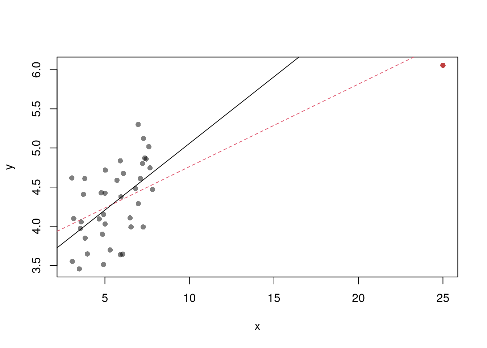
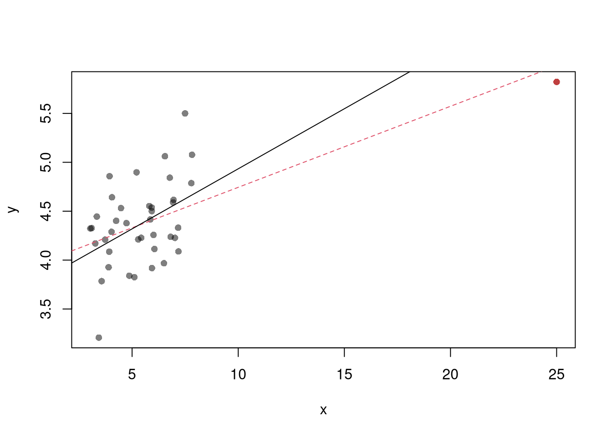
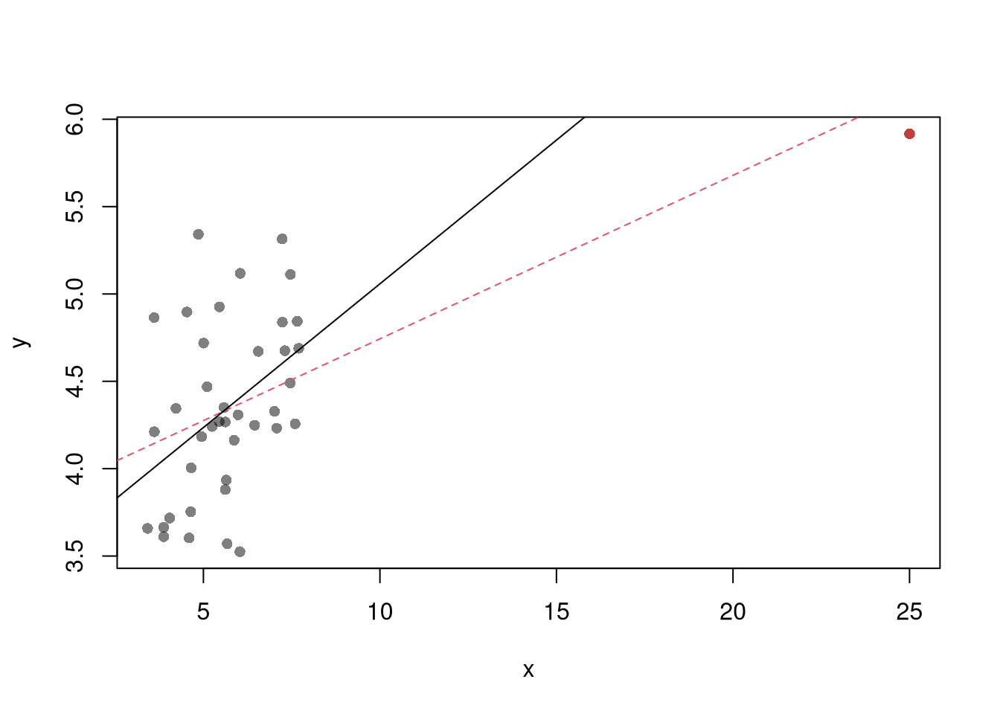

13 Multiple Linear Regression II
13.1 Diagnostics
There’s little sense in getting great standard errors for a terrible model. Plotting your regression object a simple and easy step to help diagnose whether your model is in some way bad. We next go through what each of these figures show.
reg <- lm(Murder~Assault+UrbanPop, data=USArrests)
par(mfrow=c(2,2))
plot(reg, pch=16, col=grey(0,.5))
Outliers. The first diagnostic plot examines outliers in terms the outcome \(y_i\) being far from its prediction \(\hat{y}_i\). You may be interested in such outliers because they can (but do not have to) unduly influence your estimates.
The third diagnostic plot examines another type of outlier, where an observation with the explanatory variable \(x_i\) is far from the center of mass of the other \(x\)’s. A point has high leverage if the estimates change dramatically when you estimate the model without that data point.
N <- 40
x <- c(25, runif(N-1,3,8))
e <- rnorm(N,0,0.4)
y <- 3 + 0.6*sqrt(x) + e
plot(y~x, pch=16, col=grey(0,.5))
points(x[1],y[1], pch=16, col=rgb(1,0,0,.5))
abline(lm(y~x), col=2, lty=2)
abline(lm(y[-1]~x[-1]))
See AEJ-leverage and NBER-leverage for examples of leverage in economics.
Standardized residuals are \[ r_i=\frac{\hat{\epsilon}_i}{s_{[i]}\sqrt{1-h_i}}, \] where \(s_{[i]}\) is the root mean squared error of a regression with the \(i\)th observation removed and \(h_i\) is the leverage of residual \(\hat{\epsilon_i}\).
(See https://www.r-bloggers.com/2016/06/leverage-and-influence-in-a-nutshell/ for a good interactive explanation, and https://online.stat.psu.edu/stat462/node/87/ for detail.)
The fourth plot further assesses outlier \(X\) using Cook’s Distance, which sums of all prediction changes when observation i is removed and scales proportionally to the mean square error \(s^2 = \frac{\sum_{i} (e_{i})^2 }{n-K}.\)$ D_{i} = = $$
Normality. The second plot examines whether the residuals are normally distributed. Your OLS coefficient estimates do not depend on the normality of the residuals. (Good thing, because there’s no reason the residuals of economic phenomena should be so well behaved.) Many hypothesis tests are, however, affected by the distribution of the residuals. For these reasons, you may be interested in assessing normality
par(mfrow=c(1,2))
hist(resid(reg), main='Histogram of Residuals',
font.main=1, border=NA)
qqnorm(resid(reg), main="Normal Q-Q Plot of Residuals",
font.main=1, col=grey(0,.5), pch=16)
qqline(resid(reg), col=1, lty=2)
#shapiro.test(resid(reg))Heterskedasticity may also matters for variability estimates. This is not shown in the plot, but you can conduct a simple test
Collinearity. This is when one explanatory variable in a multiple linear regression model can be linearly predicted from the others with a substantial degree of accuracy. Coefficient estimates may change erratically in response to small changes in the model or the data. (In the extreme case where there are more variables than observations \(K>N\), the inverse of \(X'X\) has an infinite number of solutions.) To diagnose collinearity, we can use the Variance Inflation Factor \[ VIF_{k}=\frac{1}{1-R^2_k}, \] where \(R^2_k\) is the \(R^2\) for the regression of \(X_k\) on the other covariates \(X_{-k}\) (a regression that does not involve the response variable Y)
13.2 Transformations
Transforming variables can often improve your model fit while still allowing it estimated via OLS. This is because OLS only requires the model to be linear in the parameters. Under the assumptions of the model is correctly specified, the following table is how we can interpret the coefficients of the transformed data. (Note for small changes, \(\Delta ln(x) \approx \Delta x / x = \Delta x \% \cdot 100\).)
| Specification | Regressand | Regressor | Derivative | Interpretation (If True) |
|---|---|---|---|---|
| linear–linear | \(y\) | \(x\) | \(\Delta y = \beta_1\cdot\Delta x\) | Change \(x\) by one unit \(\rightarrow\) change \(y\) by \(\beta_1\) units. |
| log–linear | \(ln(y)\) | \(x\) | \(\Delta y \% \cdot 100 \approx \beta_1 \cdot \Delta x\) | Change \(x\) by one unit \(\rightarrow\) change \(y\) by \(100 \cdot \beta_1\) percent. |
| linear–log | \(y\) | \(ln(x)\) | \(\Delta y \approx \frac{\beta_1}{100}\cdot \Delta x \%\) | Change \(x\) by one percent \(\rightarrow\) change \(y\) by \(\frac{\beta_1}{100}\) units |
| log–log | \(ln(y)\) | \(ln(x)\) | \(\Delta y \% \approx \beta_1\cdot \Delta x \%\) | Change \(x\) by one percent \(\rightarrow\) change \(y\) by \(\beta_1\) percent |
Now recall from micro theory that an additively seperable and linear production function is referred to as ``perfect substitutes’‘. With a linear model and untranformed data, you have implicitly modelled the different regressors \(X\) as perfect substitutes. Further recall that the’‘perfect substitutes’’ model is a special case of the constant elasticity of substitution production function. Here, we will build on http://dx.doi.org/10.2139/ssrn.3917397, and consider box-cox transforming both \(X\) and \(y\). Specifically, apply the box-cox transform of \(y\) using parameter \(\lambda\) and apply another box-cox transform to each \(x\) using the same parameter \(\rho\) so that \[ y^{(\lambda)}_{i} = \sum_{k=1}^{K}\beta_{k} x^{(\rho)}_{ik} + \epsilon_{i}\\ y^{(\lambda)}_{i} = \begin{cases} \lambda^{-1}[ (y_i+1)^{\lambda}- 1] & \lambda \neq 0 \\ log(y_i+1) & \lambda=0 \end{cases}.\\ x^{(\rho)}_{i} = \begin{cases} \rho^{-1}[ (x_i)^{\rho}- 1] & \rho \neq 0 \\ log(x_{i}+1) & \rho=0 \end{cases}. \]
Notice that this nests:
- linear-linear \((\rho=\lambda=1)\).
- linear-log \((\rho=1, \lambda=0)\).
- log-linear \((\rho=0, \lambda=1)\).
- log-log \((\rho=\lambda=0)\).
If \(\rho=\lambda\), we get the CES production function. This nests the ‘’perfect substitutes’’ linear-linear model (\(\rho=\lambda=1\)) , the ‘’cobb-douglas’’ log-log model (\(\rho=\lambda=0\)), and many others. We can define \(\lambda=\rho/\lambda'\) to be clear that this is indeed a CES-type transformation where
- \(\rho \in (-\infty,1]\) controls the “substitutability” of explanatory variables. E.g., \(\rho <0\) is ‘’complementary’’.
- \(\lambda\) determines ‘’returns to scale’‘. E.g., \(\lambda<1\) is’‘decreasing returns’’.
We compute the mean squared error in the original scale by inverting the predictions; \[ \widehat{y}_{i} = \begin{cases} [ \widehat{y}_{i}^{(\lambda)} \cdot \lambda ]^{1/\lambda} -1 & \lambda \neq 0 \\ exp( \widehat{y}_{i}^{(\lambda)}) -1 & \lambda=0 \end{cases}. \]
It is easiest to optimize parameters in a 2-step procedure called `concentrated optimization’. We first solve for \(\widehat{\beta}(\rho,\lambda)\) and compute the mean squared error \(MSE(\rho,\lambda)\). We then find the \((\rho,\lambda)\) which minimizes \(MSE\).
# Box-Cox Transformation Function
bxcx <- function( xy, rho){
if (rho == 0L) {
log(xy+1)
} else if(rho == 1L){
xy
} else {
((xy+1)^rho - 1)/rho
}
}
bxcx_inv <- function( xy, rho){
if (rho == 0L) {
exp(xy) - 1
} else if(rho == 1L){
xy
} else {
(xy * rho + 1)^(1/rho) - 1
}
}
# Which Variables
reg <- lm(Murder~Assault+UrbanPop, data=USArrests)
X <- USArrests[,c('Assault','UrbanPop')]
Y <- USArrests[,'Murder']
# Simple Grid Search over potential (Rho,Lambda)
rl_df <- expand.grid(rho=seq(-2,2,by=.5),lambda=seq(-2,2,by=.5))
# Compute Mean Squared Error
# from OLS on Transformed Data
errors <- apply(rl_df,1,function(rl){
Xr <- bxcx(X,rl[[1]])
Yr <- bxcx(Y,rl[[2]])
Datr <- cbind(Murder=Yr,Xr)
Regr <- lm(Murder~Assault+UrbanPop, data=Datr)
Predr <- bxcx_inv(predict(Regr),rl[[2]])
Resr <- (Y - Predr)
return(Resr)
})
rl_df$mse <- colMeans(errors^2)
# Want Small MSE and Interpretable
layout(matrix(1:2,ncol=2), width=c(3,1), height=c(1,1))
par(mar=c(4,4,2,0))
plot(lambda~rho,rl_df, cex=8, pch=15,
xlab=expression(rho),
ylab=expression(lambda),
col=hcl.colors(25)[cut(1/rl_df$mse,25)])
# Which min
rl0 <- rl_df[which.min(rl_df$mse),c('rho','lambda')]
points(rl0$rho, rl0$lambda, pch=0, col=1, cex=8, lwd=2)
# Legend
plot(c(0,2),c(0,1), type='n', axes=F,
xlab='',ylab='', cex.main=.8,
main=expression(frac(1,'Mean Square Error')))
rasterImage(as.raster(matrix(hcl.colors(25), ncol=1)), 0, 0, 1,1)
text(x=1.5, y=seq(1,0,l=10), cex=.5,
labels=levels(cut(1/rl_df$mse,10)))
The parameters \(-1,0,1,2\) are easy to interpret and might be selected instead if there is only a small loss in fit. (In the above example, we might choose \(\lambda=0\) instead of the \(\lambda\) which minimized the mean square error). You can also plot the specific predictions to better understand the effect of data transformation beyond mean squared error.
# Plot for Specific Comparisons
Xr <- bxcx(X,rl0[[1]])
Yr <- bxcx(Y,rl0[[2]])
Datr <- cbind(Murder=Yr,Xr)
Regr <- lm(Murder~Assault+UrbanPop, data=Datr)
Predr <- bxcx_inv(predict(Regr),rl0[[2]])
cols <- c(rgb(1,0,0,.5), col=rgb(0,0,1,.5))
plot(Y, Predr, pch=16, col=cols[1], ylab='Prediction',
ylim=range(Y,Predr))
points(Y, predict(reg), pch=16, col=cols[2])
legend('topleft', pch=c(16), col=cols,
title=expression(rho~', '~lambda),
legend=c( paste0(rl0, collapse=', '),'1, 1') )
abline(a=0,b=1, lty=2)
When explicitly transforming data according to \(\lambda\) and \(\rho\), these parameters increase the degrees of freedom by two. The default hypothesis testing procedures do not account for you trying out different transformations, and should be adjusted by the increased degrees of freedom. Specification searches deflate standard errors and are a major source for false discoveries.
13.6 More Literature
Diagnostics
- https://book.stat420.org/model-diagnostics.html#leverage
- https://socialsciences.mcmaster.ca/jfox/Books/RegressionDiagnostics/index.html
- https://bookdown.org/ripberjt/labbook/diagnosing-and-addressing-problems-in-linear-regression.html
- Belsley, D. A., Kuh, E., and Welsch, R. E. (1980). Regression Diagnostics: Identifying influential data and sources of collinearity. Wiley. https://doi.org/10.1002/0471725153
- Fox, J. D. (2020). Regression diagnostics: An introduction (2nd ed.). SAGE. https://dx.doi.org/10.4135/9781071878651